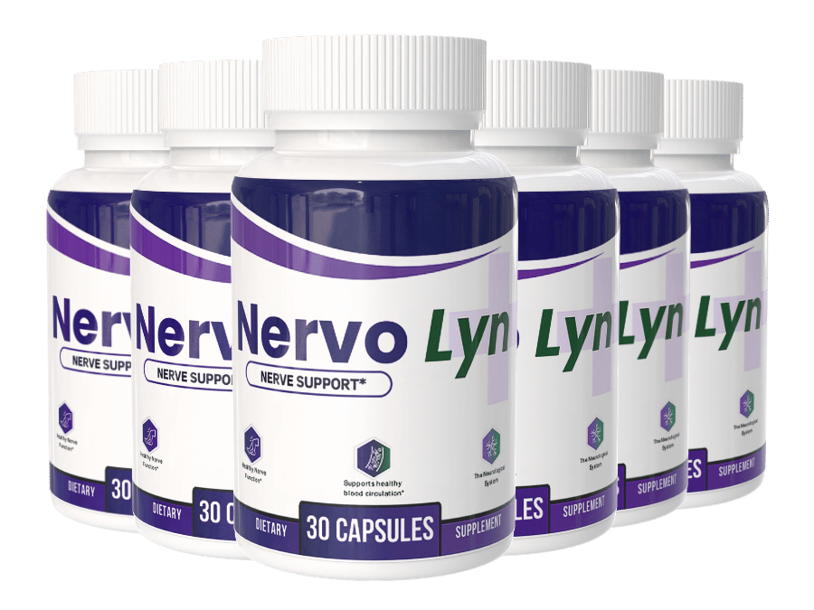

What Is Nervo Lyn And How Does It Work?
Ask ten people where nerve trouble in the feet actually starts and nine of them will point straight down at their toes. They are looking in the right place at the wrong problem.
The feet sit at the very end of the line. Blood has the longest trip to make to get there, through the smallest vessels in the entire body, and when that supply thins out even slightly, the nerves running alongside those vessels are the first tissue to feel it — because they depend on that blood flow to maintain their own protective sheath. Picture the nerve as a length of wire and the sheath as its insulation. Insulation does not repair itself out of nothing; it is built and rebuilt using what circulation delivers. Cut the delivery and the insulation thins fastest at the far end of the wire, farthest from the pump. That is nerve starvation — not damage in the way an injury is damage, but a supply problem that shows up as a sensory one.
Nervo Lyn is a once-a-day capsule built to address that supply problem directly, rather than mask what it produces. Instead of dulling sensation the way a prescription might, the formula is aimed at the two things nerve tissue actually runs on: circulation to the smallest vessels, and the specific nutrients that tissue draws on to keep rebuilding itself.
Because it is working on supply and repair rather than flipping a switch, the timeline behaves like biology, not marketing. The maker reports early shifts turning up around three to four weeks in, with more complete change by eight to twelve weeks, and recommends a full run of 90 to 180 days to let the process finish. One capsule, taken with water, is the entire daily commitment.
Nervo Lyn Ingredients
Six ingredients made the cut, and each one earns its place against the same starvation problem rather than padding out a label.
- Magnesium Glycinate (80mg): Chosen in the glycinate form specifically because it absorbs where the cheaper oxide form largely does not. Magnesium regulates how easily a nerve fires in the first place, which is why a shortfall tends to show up as twitching, restlessness, or that wired, can't-settle feeling after dark.
- Alpha-Lipoic Acid: The single most researched compound in this category for nerve comfort, which is why it anchors nearly every serious formula built around it. It is soluble in both water and fat, letting it reach into the nerve sheath itself instead of stopping in the bloodstream around it.
- Butcher's Broom (Ruscus aculeatus): The circulation specialist of the group. It supports venous tone — the ability of the smallest vessels to push blood back up out of the lower legs and feet instead of letting it pool there, which is the supply-line half of the starvation problem.
- L-Carnitine: Ferries fatty acids into the mitochondria, the part of the cell that generates the energy nerve tissue needs to rebuild its own insulation. Nerve repair is expensive, energy-wise; starve the fuel supply and repair stalls with it.
- Curcumin (Turmeric 95%): Standardized to 95% curcuminoids rather than raw turmeric powder, aimed at the low-grade inflammation that keeps an already-irritated nerve irritated.
- Coenzyme Q10: Works the energy side alongside L-Carnitine, at a stage in life when natural CoQ10 levels are already declining — which is precisely when this kind of nerve trouble tends to show up.
Put together, nothing here is filler chosen to lengthen a label: two ingredients target circulation, two target cellular energy, one targets nerve excitability, one targets inflammation. It is a formula built around one mechanism, from four different angles.
Nervo Lyn Side Effects
Every ingredient in this capsule is something your body already knows how to handle.
That is not a marketing line — it is what the ingredient list actually shows. A mineral, an amino acid, a root extract, a spice compound, and an antioxidant your own cells already produce. These are nutrients the body recognizes at supportive amounts, not engineered compounds trying to override a signal or force a system into a new state. Formulas built the second way tend to come with a tradeoffs list. This one is not built that way.
The usage record backs that up. Among the growing number of people taking Nervo Lyn as directed, there is no widespread pattern of adverse reports — consistent with what you would expect from a once-daily blend of well-tolerated nutrients rather than a pharmaceutical.
Manufacturing supports it further. Nervo Lyn is produced in FDA-registered, GMP-compliant facilities under documented quality controls, screened for purity and free of unnecessary fillers. Knowing exactly what is in every capsule is its own form of safety.
As with any dietary supplement, check with a healthcare professional first if you have an existing medical condition or take prescription medication.
Nervo Lyn Dosage
The entire daily routine fits in one sentence: one capsule, once a day, with water.
Each bottle holds 30 capsules, a clean one-month supply that makes it easy to glance at what is left and know instantly whether you have actually been consistent.
Consistency carries more weight here than with most supplements, because nerve tissue rebuilds slowly and only under steady conditions. Most people anchor the capsule to an existing habit — breakfast is the common choice — so it never becomes a thing to remember on its own. Skipping days and doubling up later does not produce a slower version of the result; it largely produces no result at all, since the supply line needs to stay funded, not topped up in bursts.
That is why the maker frames the real protocol in months, not weeks, and why the multi-bottle options on the official site exist: they cover a full 90-to-180-day run without a mid-protocol reorder, and the per-bottle cost drops the longer the supply. Every order is a one-time purchase, with no subscription and no automatic recharge behind it.
Stick to one capsule daily. Doubling the dose does not double the pace of repair.
Nervo Lyn – Refund Policy
Nervo Lyn ships with a 60-day money-back guarantee on every order.
Line that window up against the timeline in the section above and the logic gets obvious fast. Early changes are reported around the three-to-four-week mark. The guarantee runs a full sixty days — long enough to sit through the entire window where the formula either does something or it does not, with real margin left over. A company bracing for a wave of refunds does not build a guarantee that overlaps the moment of truth this completely.
Full terms and the process for requesting a refund are on the official website.
Nervo Lyn Customer Reviews
"I quit my Tuesday water aerobics class two years ago and told the instructor my knees were the problem. It was actually my feet — that numb, wrapped-in-something feeling like I had socks on that weren't there, and I didn't trust my footing on a wet pool deck anymore. Somewhere around week six I noticed I could actually feel the tile under my feet again getting out of the shower. I went back to class in April. Nobody there knows why I disappeared for two years, and I'm not sure I'll ever explain it."
"What got me were the zaps. Out of nowhere, up through my calf, sharp enough that I'd jerk awake and my wife would ask what was wrong before I even knew myself. That went on most nights for over a year. I'd already gone through two different rounds of prescription nerve pills and a drawer full of compression socks that did basically nothing. Around the two-month mark the nights started going quiet. I'm not saying every single night is perfect, but my wife sleeps through now, and so do I most of the time. That alone was worth it."
"I'm still working full days at the front desk, which means eight hours on my feet whether they cooperate or not. For a long stretch it felt like I had a folded sock bunched up under my toes even in flat shoes, and by 3 p.m. I was counting down instead of working. I told my daughter I'd basically tried everything already and wasn't expecting much from one more bottle. By the end of the first month I noticed I'd made it through a full shift without shifting my weight every five minutes. That's a small thing to everyone except the person standing there."
Nervo Lyn – Where To Buy
One decision determines whether your purchase is actually protected, and it has nothing to do with price.
Nervo Lyn is not sold through Amazon, eBay, or Walmart. Listings do show up there anyway, and they look convincing. What a marketplace listing cannot tell you is how that bottle was stored, how long it sat in a warehouse, or whether it is the current formulation at all — and for a blend with active compounds that degrade over time, that is not a small unknown to accept.
The part that matters even more: the 60-day guarantee applies only to orders placed through the official site, because that is the only record the manufacturer's support team has access to. An order placed through a third party is invisible to them — there is nothing to look up and nothing to honor.
Buying direct is what keeps the entire package intact: the authentic formulation, the manufacturing standards described above, and a guarantee that is actually enforceable.
Before you check out, confirm you are on the official Nervo Lyn site.
To ensure you're getting the authentic product, most users choose to visit the official website directly.
Is Nervo Lyn A Scam?
No — and the clearest evidence is in what the formula does not do.
A scam in this space is easy to spot once you know the pattern: one cheap ingredient, a promise of relief within days, and a timeline vague enough that it can never be proven wrong. Nervo Lyn runs the opposite playbook. It commits to a slow, specific window — three to four weeks for early changes, eight to twelve for the fuller picture — which is an inconvenient thing to admit if the goal were a fast, one-time sale. Six ingredients, each assigned a defined job against nerve starvation, made in FDA-registered and GMP-compliant facilities, sold as a single purchase with no subscription attached.
The 60-day guarantee sits on top of all of that, covering the entire stretch where you would find out either way.
Here is the honest limit: this will not be the answer for everyone. Nerve discomfort has more than one root cause, and a circulation-and-nutrient formula reaches some of them, not all of them. If your situation needs a medical workup, get one first — that is worth more than any bottle.
But if you have spent the last year quietly rearranging your days around your feet — skipping the walk, taking the elevator, letting someone else stand at the stove — the math here is not complicated. Try it. If nothing shifts in sixty days, you send it back and the only thing you spent was the wait.
As with any dietary supplement, check with a healthcare professional first if you have an existing condition or take prescription medication.
For those who want to verify product details or check current availability, the official Nervo Lyn website remains the safest and most reliable option.
